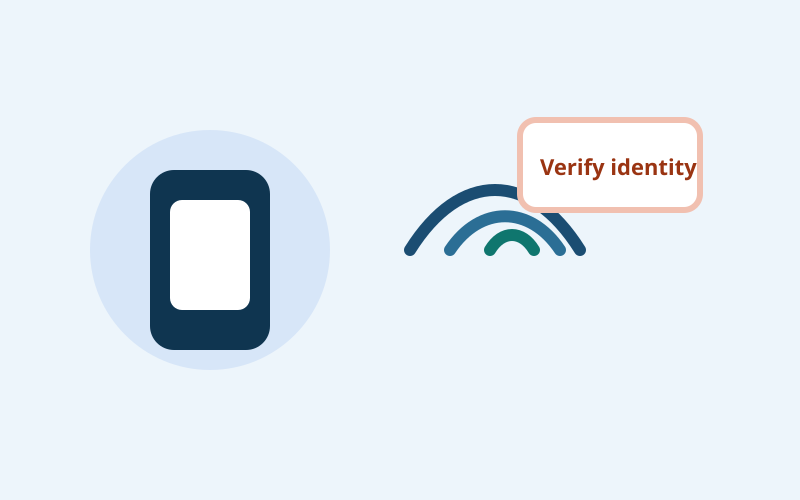

In plain words
AI Voice Impersonation Scams explained simply: what it looks like, the warning signs, and the safest next step if it happens to you.
What this is
Voice impersonation scams use AI-generated audio to imitate a familiar person and create urgency. Attackers aim to trigger immediate money transfer or sensitive disclosure.
How it works
- The scammer collects short audio samples from public clips or messages.
- They generate a convincing voice clone.
- You receive a distressed call requesting urgent money or account action.
- Emotion bypasses normal verification steps.
Why people fall for it
- Humans are wired to trust familiar voices quickly.
- High-stress context reduces critical thinking.
- Audio quality has improved enough to sound believable in short calls.
Warning signs
- Caller demands secrecy and immediate transfer.
- Call quality is odd, with unnatural pacing or clipped responses.
- The story blocks normal verification (“phone is dying,” “no time”).
- Request is unusual for that person’s normal behavior.
Example scenario
You get a call in your sibling’s voice saying they were in an accident and need immediate transfer for legal fees. A second “officer” joins to increase pressure.
What to do if it happens
- Pause and verify through a separate known channel.
- Use a family safe word or challenge question.
- Do not transfer funds during the live call.
- Report attempts to your carrier and local fraud channels.
How to reduce risk next time
- Set family verification rules before an emergency happens.
- Limit public posting of clear voice clips where possible.
- Treat urgency plus secrecy as a high-risk pattern.
Quick reminder: You do not need proof that something is fake before you pause. One credible red flag is enough to stop and verify.